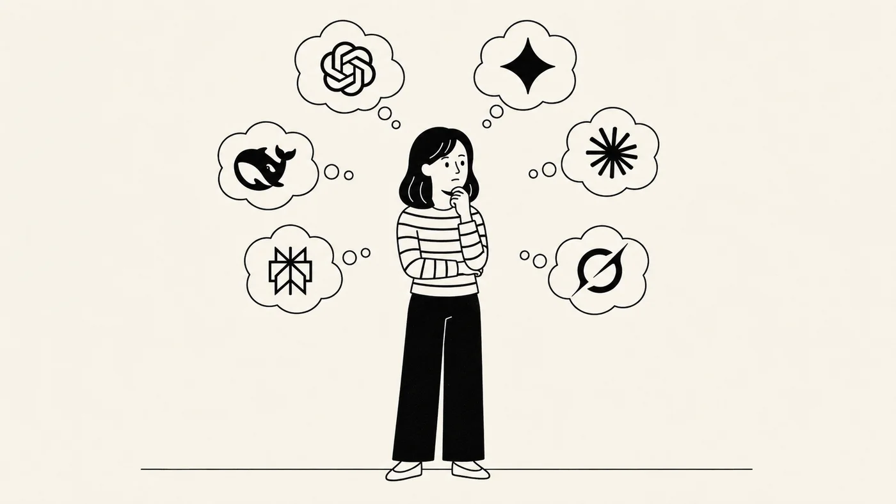

Qual IA usar?
Existem muitas ferramentas de inteligência artificial, e elas mudam toda semana. Neste curso, a gente aprende a função antes do botão.

ChatGPT, Gemini, Copilot, Meta AI. Você provavelmente já usou alguma dessas ferramentas. Outras, talvez tenha apenas ouvido o nome e ficado em dúvida: para que serve cada uma? Qual é a melhor, afinal?
Existem várias ferramentas de inteligência artificial generativa. Algumas produzem texto. Outras criam imagens, áudios ou vídeos. E algumas já conseguem fazer tudo isso no mesmo lugar.
Esse cenário muda muito rápido. Toda semana aparece uma novidade: um modelo novo, uma função diferente, uma melhoria que muda a forma de realizar as tarefas.
Eu acho interessante acompanhar essas mudanças. Mas, se a gente tentar usar sempre a ferramenta mais nova ou mais avançada, corre o risco de passar mais tempo trocando de ferramenta do que realizando o nosso trabalho.
A função antes do botão
Por isso, neste curso, a gente não vai aprender apenas qual botão apertar. Vamos aprender qual é a função que estamos procurando.
Quando você sabe o que deseja fazer, consegue procurar um caminho. O botão pode mudar de lugar, mas a função ainda pode estar disponível em outro menu, com outro nome ou por uma forma diferente de acesso.
É claro que, nos vídeos de passo a passo, eu vou mostrar a tela e indicar onde clicar. Isso é importante para que todo mundo consiga acompanhar. Mas o clique não é o conhecimento principal. O mais importante é compreender o que aquela função permite fazer.
Quando a tela mudar, você não começa do zero
Você sabe o que está procurando e pode encontrar um novo caminho para chegar ao mesmo resultado.
Além disso, as ferramentas de inteligência artificial têm muitas funções em comum. Como essas empresas concorrem entre si, quando uma lança uma função nova, ela aparece algum tempo depois nas outras.
Você não precisa conhecer todas as ferramentas para começar. Vai perceber que é possível levar os mesmos métodos para outras ferramentas. Ao longo do curso, observe o que estamos tentando fazer em cada atividade. Se você entender a função, consegue usá-la em qualquer ferramenta que tiver na mão.
As duas ferramentas do curso
Ao longo deste curso, vamos trabalhar com duas ferramentas principais. Com elas é possível fazer praticamente tudo o que vamos aprender.
ChatGPT
da OpenAI
Gemini
do Google
Vamos começar pela prática
Semana da Criança: começando a conversa
- Acessar o ChatGPT pelo computador ou Chromebook.
- Planejar sugestões para a Semana da Criança de um CMEI, uma situação genérica, sem dados pessoais.
- Continuar a conversa pelo celular e ajustar as configurações de privacidade.
Depois dessa primeira experiência, você vai estar pronta para levar a ferramenta para outras tarefas do trabalho escolar.